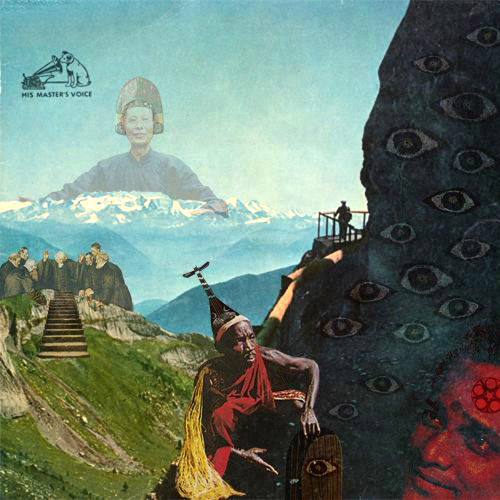
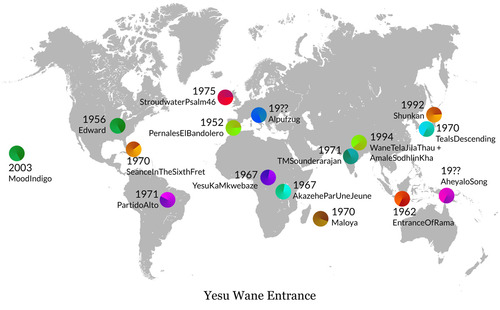
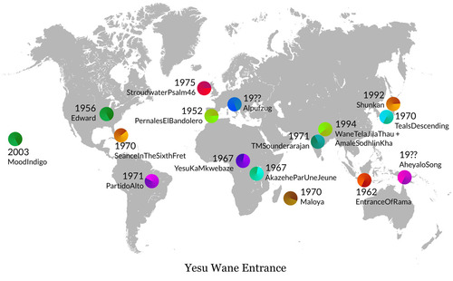

Yesu Wane Entrance
Esta canción está compuesta con 28 loops procedentes de 18 canciones diferentes. En este mapa puedes ver de donde procede cada canción y su fecha de grabación.
This song is made with 28 loops from 18 different songs. On this map you can see where each song comes from, and the recording date.

Las 18 canciones usadas están en los siguientes discos: